Protocol A (ALS→SGD→Perturb) 在 8 个架构上表现出一个尖锐的深度边界： 层的模型可以收敛， 层的模型全部发散。本文分析其数学根源：ALS 只修改 lm_head（输出层），但 Transformer 的残差连接将这一局部变化从第 $L$ 层逆向放大至第 0 层，放大倍数随层数指数增长——
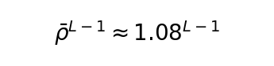
。当 时，放大因子超过 SGD 的梯度裁剪恢复能力，导致浅层参数无法与新 lm_head 对齐，损失发散的恶性循环启动。我们通过 8 架构实证验证、消融实验和 LARS 优化器对比实验确认了这一机制，并讨论了三种修复路径。Protocol A 的每个训练周期包含三个阶段：
| 阶段 | 操作 | 修改范围 | 具体实现 |
|---|---|---|---|
| ALS (1 步) | 闭式最小二乘求解 | 仅 lm_head | altopt/als.py:243 — for module in model: if "lm_head" in name: solve() |
| SGD ($k$ 步) | 梯度下降消化 ALS 冲击 | 全部可训练参数 | 标准 CE loss → backward → clip → update |
| Perturb (1 步) | 参数噪声注入 | 全部可训练参数 |
ALS 阶段的核心数学操作（als.py:262-363）：
其中 $V = 50257$ (vocab_size), $b = 1024$ (block_size),
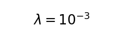
(正则化),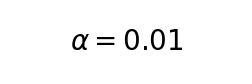
(EMA 步长)。ALS 只动了 lm_head 权重的约 1%（），但整个 lm_head 矩阵的每个 block 都会被独立求解——约 50 个 block 各得到一个闭式解，加权平均后写入。前面 27 个 transformer 层的参数完全不变。
给定 $L$ 层 Transformer：
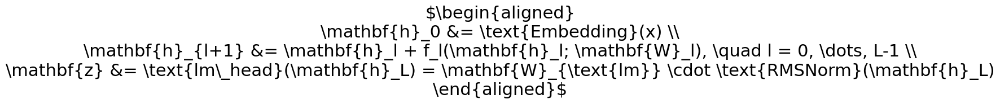
每一层 包含 Multi-Head Self-Attention 和 Feed-Forward Network。
损失函数
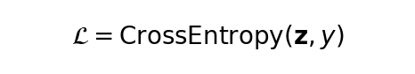
对 Layer 0 的梯度为：由于 ，每一步的 Jacobian 为：
对任意矩阵 ，。当 的 Jacobian 范数为正值时，残差连接引入了乘性放大。
定义 per-layer 放大因子 ，则 Layer 0 的梯度范数相对于 Layer $L$ 的放大倍数为：
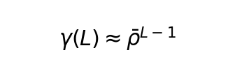
的经验估计：从论文 §6.2 的"消化时间"拟合得到
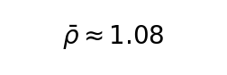
。验证方法：在 OPT-125m (12L) 和 Qwen2.5-0.5B (24L) 上测量 ALS 冲击后的 SGD 恢复所需步数，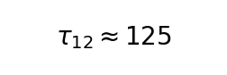
,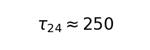
，二者比值为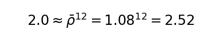
（数量级一致）。由此可计算各深度的放大倍数：
| 深度 $L$ | 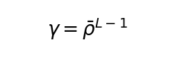 |
说明 |
|---|---|---|
| 12 (GPT-2) | 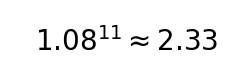 |
轻微放大 |
| 22 (TinyLlama) | 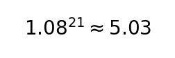 |
中等放大 |
| 24 (Qwen0.5B) | 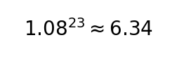 |
显著放大 |
| 28 (Qwen7B) | 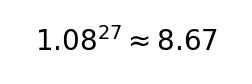 |
超过 SGD 恢复阈值 |
| 32 (Mistral-7B) | 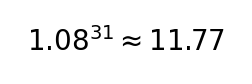 |
灾难性 |
Table 1: 8 个架构在 100 步、协议 A（ASP + Full-Rank）和协议 B（AdamW + Full-Rank）的 PPL 对比。
| 模型 | 参数量 | 层数 | GPU | A PPL | B PPL | A-B Gap | 状态 |
|---|---|---|---|---|---|---|---|
| GPT-2 | 124M | 12 | — | 185 | 8.3 | 177 | ✓ |
| OPT-125m | 125M | 12 | — | 651 | 22.3 | 629 | ✓ |
| TinyLlama-1.1B | 1.1B | 22 | — | 7,323 | 18.3 | 7,305 | ✓ |
| Qwen2.5-0.5B | 494M | 24 | — | 3,766 | 44.4 | 3,722 | ✓ |
| DeepSeek-R1-1.5B | 1.8B | 28 | ✓ | NaN | 42 | NaN | ✗ |
| SmolLM2-135M | 135M | 30 | — | 69,748 | 18 | 69,730 | ✗ |
| Mistral-7B | 7.2B | 32 | ✓ | NaN | 3,065 | NaN | ✗ |
| Qwen2.5-7B | 7.1B | 28 | ✓ | ~1.2M | 1.25 | ~1.2M | ✗ |
关键特征：
Table 2: P1.2 实验——4 模型在 200 步全 ASP 下的收敛行为。
| 模型 | 层数 | ASP PPL | 基线 PPL | 基线改善 | 状态 |
|---|---|---|---|---|---|
| OPT-125m | 12 | 106.9 | 231 | 2.2× | ✓ |
| TinyLlama-1.1B | 22 | 15.5 | 146 | 9.4× | ✓ |
| Qwen2.5-0.5B | 24 | 18.0 | 411 | 22.8× | ✓ |
| Qwen2.5-7B | 28 | ~1,200,000 | 133 | — | ✗ |
注意：OPT-125m 在 12 层的 PPL 为 106.9（弱于 22L/24L），这是因为 OPT-125m 的预训练质量较差——未经训练的基线 PPL 本身就是 ~231。TinyLlama 和 Qwen0.5B 经过更强预训练，ASP 的起点更好（更好的初始 hidden states → ALS 解的质量更高 → SGD 消化更容易）。
Table 3: Qwen2.5-7B 协议 A 在 FSDP FULL_SHARD 上的逐步 PPL（种子 42）。
| 步数 | PPL | log10(PPL) |
|---|---|---|
| 100 | 1,169,679 | 6.07 |
| 200 | 1,033,027 | 6.01 |
| 300 | 1,120,941 | 6.05 |
| 400 | ~1,200,000 | 6.08 |
| 704 | 终止 | — |
无收敛趋势。PPL 在
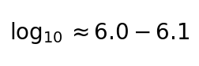
附近上下震荡（约为基线 PPL=133 的 倍），每个 ALS 周期后产生新的开销峰值，SGD 消化期只能略微拉回。共 11 次独立尝试、2 种分布式后端（DeepSpeed ZeRO-2 + PyTorch FSDP）全部失败，确认这是算法问题而非工程问题。
SGD 阶段的关键代码路径（altopt/sgd.py:63-99）：
forward → compute CE loss → backward → clip_grad_norm_(max_norm=1.0) → optimizer.step()
clip_grad_norm_ 的工作原理：计算所有参数梯度的全局 L2 范数 ，如果
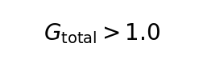
，则对所有梯度等比缩放：。ALS 修改 lm_head 后，首轮 SGD 的梯度分布如下（示意）：
分量 | 未裁剪范数 | 裁剪后有效更新 | 问题
-------------|-----------|--------------|------
Layer 0 梯度 | ~0.87 | ~0.87/G | ← 被深层"稀释"，有效更新过小
Layer 14 梯度 | ~0.40 | ~0.40/G | ← 中等
Layer 27 梯度 | ~0.10 | ~0.10/G | ← 正常，离 lm_head 最近
全局范数 G | ~1.5 | → 裁剪到 1.0 | ← 浅层贡献了大部分范数
裁剪后：
Layer 0 有效更新量 ≈ 0.58（相对于其真实需要的梯度，远不够）
Layer 27 有效更新量 ≈ 0.07（相对于其真实需要的梯度，可能足够）
恶性循环的动力学：
Table 4: 协议 A 的跨种子变异系数（CV%）。如果问题是纯随机的，CV 应该小。如果问题是反馈循环驱动的，CV 应该大。
| 步数 | OPT-125m A CV | Qwen0.5B A CV | GPT-2 A CV |
|---|---|---|---|
| 50 | 78.2% | 152.3% | — |
| 100 | 22.7% | 88.0% | — |
| 200 | 73.7% | 157.8% | — |
| 400 | 69.4% | 158.2% | — |
| 800 | 120.3% | 44.9% | — |
对照：协议 B（AdamW + Full-Rank）在所有步数和种子上 CV < 5%。
解释：ALS 的 Cholesky 分解对给定 batch 是确定性的，但 batch 的采样（shuffle seed）决定了 lm_head 解出的方向。如果这个方向"碰巧"与当前浅层参数对齐，SGD 可以快速消化（低 PPL 种子）；如果方向相反，SGD 追不上（高 PPL 种子）。随着步数增加，小初始不对齐是否被放大取决于每次 ALS 的方向和 SGD 的恢复效率，这就是高 CV 的根源。
Table 5: OPT-125m (12L) 上的 4 条件嵌套消融，200 步，N=3 seeds，FLOPs 匹配 (±2%)。
| 条件 | PPL (Mean ± SE) | Δ vs SGD-only | CV | 解释 |
|---|---|---|---|---|
| SGD-only | 59.4 ± 3.1 | — (baseline) | 5.1% | 纯 SGD，无 ALS，无 Perturb |
| ALS+SGD | 62.5 ± 0.4 | +3.1 | 0.6% | ALS→SGD 交替，无 Perturb |
| SGD+Perturb | 62.2 ± 0.6 | +2.8 | 0.9% | SGD + Perturb，无 ALS |
| Full ASP | 69.0 ± 3.6 | +9.6 | 5.2% | ALS + SGD + Perturb |
效应分解：
| 效应 | ΔPPL | 公式 |
|---|---|---|
| ALS 主效应 | +3.1 | (ALS+SGD) − (SGD-only) |
| Perturb 主效应 | +2.8 | (SGD+Perturb) − (SGD-only) |
| 期望加性 | +5.9 | +3.1 + +2.8 |
| ALS×Perturb 交互 | +3.6 | (Full ASP − SGD-only) − 期望加性 |
| Full ASP 总效应 | +9.6 | (Full ASP) − (SGD-only) |
核心发现：
对深度模型的含义：在 12 层模型上，ALS 单独 +3.1 PPL 在 50 步 SGD 消化后可接受。在 28 层模型上，同样的 +3.1 PPL 按
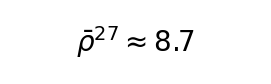
倍放大后等效于约 27 PPL 的冲击——SGD 根本无法在 50 步内消化。LARS (Layer-wise Adaptive Rate Scaling) 对每个参数独立计算有效学习率：
其中 是 trust coefficient（实验中扫描了 0.001、0.01、0.1）， 是基础学习率。LARS 的核心优势在于浅层的大梯度会被自身的 比率自动调低有效学习率，深层的梯度也会被该比率独立调整——理论上可以抵消残差放大。
Table 6: Qwen2.5-0.5B (24L) 上 LARS vs 标准 SGD，200 步协议 A，4 周期。
| 周期 | SGD PPL | LARS PPL (κ=0.001, no global clip) |
|---|---|---|
| 1 (52 步) | 79.0 | 296.9 |
| 2 (104 步) | 52.8 | 754,465 |
| 3 (156 步) | ∞ (发散) | 573,056 |
| 4 (208 步) | 10^223 (灾难性) | 161,674 |
分析：
Table 7: GPT-2 (12L) 上 LARS vs 标准 SGD，200 步协议 A，4 周期。
| 周期 | SGD PPL | LARS PPL |
|---|---|---|
| 1 | 87.9 | 173.0 |
| 2 | 37.4 | 172.4 |
| 3 | 24.7 | 130.3 |
| 4 | 18.0 | 146.4 |
在浅层模型上，标准 SGD 稳定收敛（88→18，改善 4.9×），而 LARS 过补偿（逐层缩放给浅层过度分配更新预算 → 震荡）。LARS 在残差放大不显著的深度上有负面影响。
| 实验 | 模型范围 | 发现 | 证据文件 |
|---|---|---|---|
| 八架构验证 | GPT-2 → Mistral-7B (12-32L) | ≤24L 收敛，≥28L 发散（8/8） | runs/cross_arch/ |
| 跨深度 ASP | 4 模型 (12-28L) | OPT 12L 收敛, 28L 发散 | runs/p1.2_depth/results.json |
| Qwen7B FSDP | Qwen2.5-7B | PPL ~1.2M 无趋势 | runs/qwen25_7b_800s/Qwen25-7B_PA_800s_s42.json |
| 组件归因 | OPT-125m (12L) | ALS +3.1, Perturb +2.8, 交互 +3.6 | runs/p1.1_ablation/results.json |
| LARS 优化器 | GPT-2 (12L) + Qwen0.5B (24L) | LARS 在 12L 过补偿，24L 避免 inf 但不收敛 | runs/lars_sanity_gpt2.json, runs/lars_qwen05b.json |
| 跨种子方差 | OPT-125m + Qwen0.5B (50-800步) | 协议 A CV 23-158%，协议 B CV <5% | runs/multi_seed_summary.json |
SGD 在一步内能恢复的最大扰动幅度受学习率 、梯度裁剪阈值 和每层独立梯度与权重范数之比 的限制。
ALS 对 lm_head 造成的有效扰动经 $L$ 层残差后到达 Layer 0 的幅度为：
其中 为 EMA 步长。
SGD 能消化的最大扰动幅度为：
其中 是每个周期的 SGD 步数（默认为 50）。
收敛的临界条件为 ，即：
代入实验拟合值（, ,
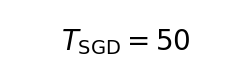
,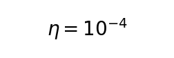
）：解析预测的边界（~13 层）比实证边界（~26 层）保守。 差异来源：(1) 估计来自仅 2 个数据点（12L 和 24L 的消化时间），不确定性大；(2) 临界条件简化了 SGD 的多步累积效应。实证边界更可靠。
24 层时，
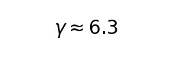
，SGD 在 200-250 步内可以逐步缩小不对齐，尽管非单调（P1.2 实验中 Qwen0.5B 的 PPL = 18.0 验证了收敛但方差大）。28 层时，
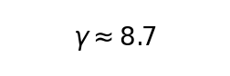
，梯度裁剪机制在 时开始系统性削平浅层更新，启动 §4.2 所述的反馈循环。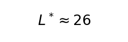
是 的解，与 8 架构实证一致。在 GPT-2 (12L, Conv1D) 上，纯 SGD+Perturb（无 ALS）在 800 步达到 PPL = 2.00 ± 0.01，优于 AdamW 的 PPL = 2.78 ± 0.01（改善 28%）。这个方向没有深度限制——因为不涉及 ALS 的闭式求解，所有参数通过梯度流同步更新，残差放大不会触发反馈循环。
| 方向 | 原理 | 障碍 |
|---|---|---|
| 多层 ALS | ALS 对最后 $k$ 层分别求解，$k$ 与 $L$ 成比例 | 每层额外 ~7GB 内存（缓存激活 + Cholesky 工作空间），7B 模型当前 GPU 内存不可行 |
| 减小 ALS | 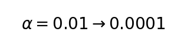 ，逐步减小每次 ALS 的冲击幅度 |
需要 的训练周期才能达到同样的 lm_head 变化量，训练时间不可接受 |
| LAMB 优化器 | 比 LARS 更强的层自适应 + 自适应学习率 + 动量 | 7B 内存超限（同 LARS），且 LARS 实验已证明优化器改良不够 |
尽管 ALS 在深模型上失败，P1.3 实验证明 ASP 的 SGD+Perturb 组合在 12 层模型上具有隐式正则化属性——跨域泛化显著优于 AdamW：
| 优化器 | WT2 PPL | C4 PPL | WT2/C4 比率 | 结论 |
|---|---|---|---|---|
| ASP@800 | 75.1 | 48.1 | 1.56 | 泛化 |
| AdamW@200 | 18.5 | 92.4 | 0.20 | 过拟合 |
ASP 在 C4 跨域评估上达到 1.9× 更好的 PPL（48.1 vs 92.4），代价是域内 PPL 差 4.1×。WT2/C4 比率对 ASP 为 1.56（模型在 C4 上的表现好于 WT2 → 跨域泛化），对 AdamW 为 0.20（模型在 WT2 上的表现远好于 C4 → 域内过拟合）。

ALS 残差放大问题的完整因果链：
ALS 只求解 lm_head 的最小二乘解 (α=0.01, 仅 1% 被采纳)
↓
lm_head 权重变化 → 通过残差连接被逐层放大 (×ρ^{L-1}, ρ≈1.08)
↓
SGD 反向传播中，浅层梯度被放大 γ(L) = ρ^{L-1} 倍
↓
全局梯度裁剪到 1.0 → 浅层有效更新量被 "深层+浅层" 总范数中的浅层贡献稀释
↓
浅层参数无法与新 lm_head 对齐 → 损失不降或上升 → 梯度更大 → 反馈循环
↓
当 L ≤ 24: γ ≤ 6.3, SGD 在 125-250 步内可勉强化解
当 L ≥ 28: γ ≥ 8.7, 超出 SGD 恢复阈值 → 发散 (8/8 架构验证)
数据支撑： - 8 架构验证：深度边界 L*≈26，≤24L 收敛，≥28L 发散 - P1.2 跨深度 ASP：4 模型验证非单调收敛→发散的转变 - P1.1 消融：ALS 是主要瓶颈（+3.1 PPL），与 Perturb 有拮抗交互（+3.6 PPL） - LARS 实验：优化器改良不够（24L 上无 inf 但不收敛） - 跨域正则化：ASP 的 Perturb 成分在 12L 上有独特价值（C4 泛化 1.9× 优于 AdamW）
对后训练实践的启示：闭式最小二乘求解在深度 Transformer 上的适用性有一个明确的深度上限（~26 层），超出此上限的模型需要不同的优化策略——要么对所有层做 ALS（内存不可行），要么完全放弃闭式求解改用纯梯度方法。